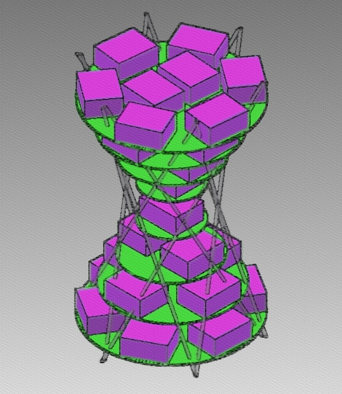

Welcome to Lazarus

The zombie epidemic may soon be upon us. However we at Lazarus are staying one step ahead of this virus. With the help of a super computer and a zombie virus algorithm, we can simulate the spread of the virus in dense populations. Learn about our team here at Texas Tech and follow us as we build our supercomputer to defeat this zombie epidemic.